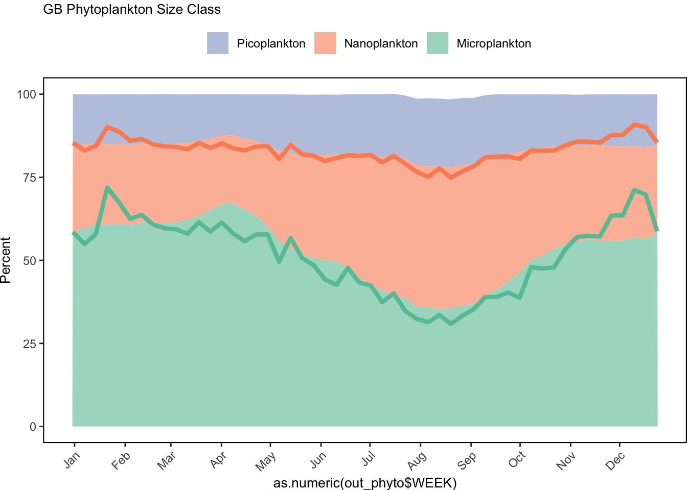
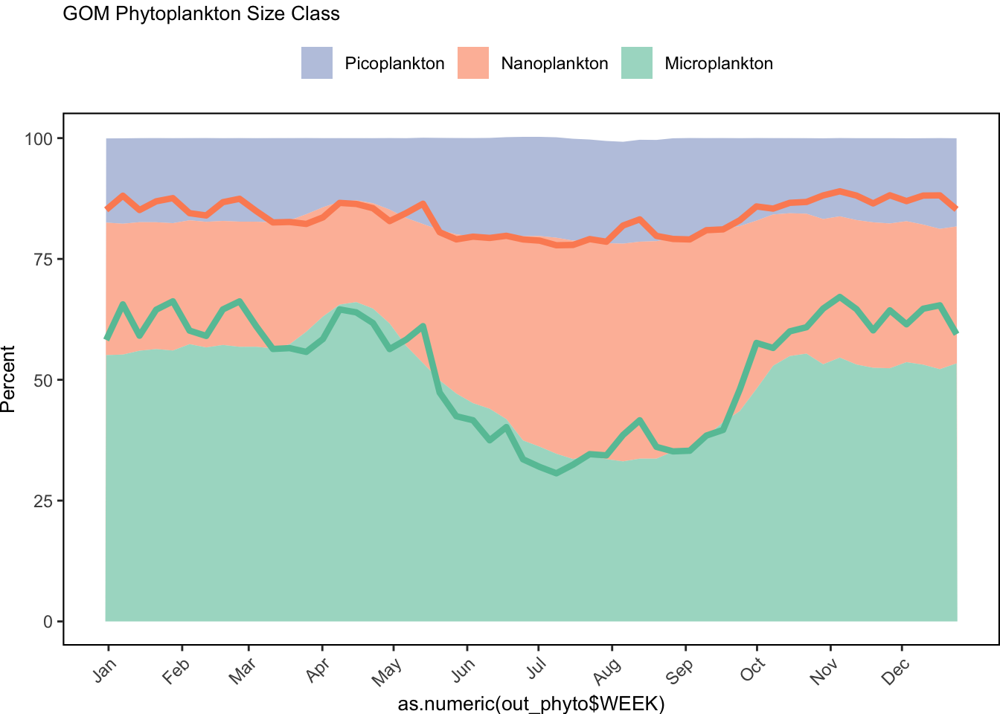
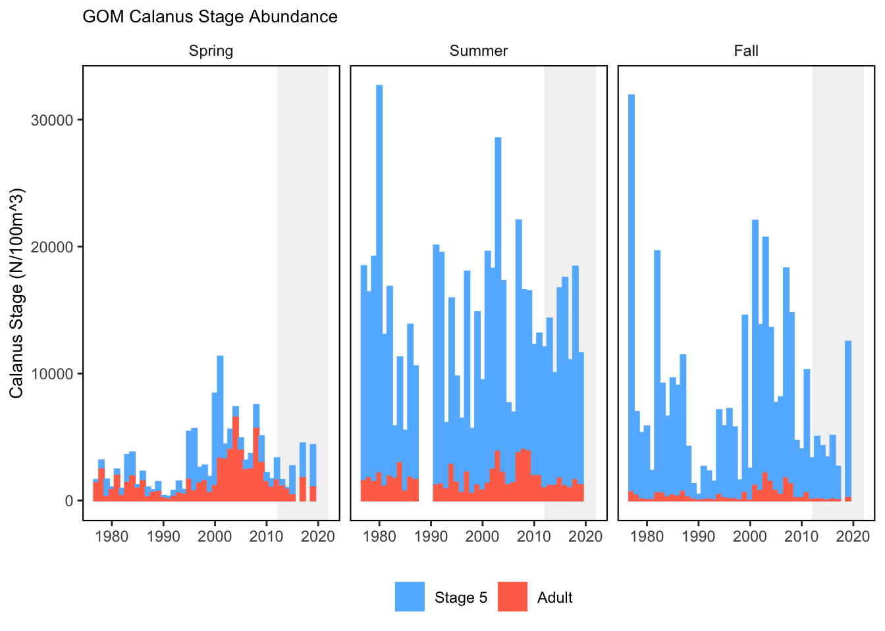
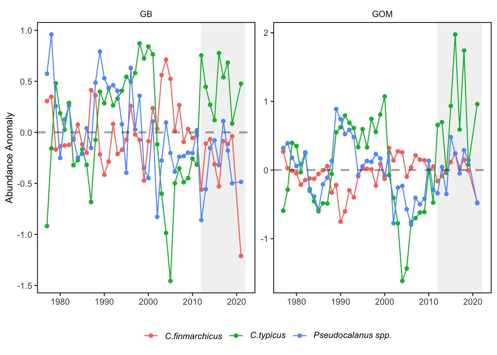
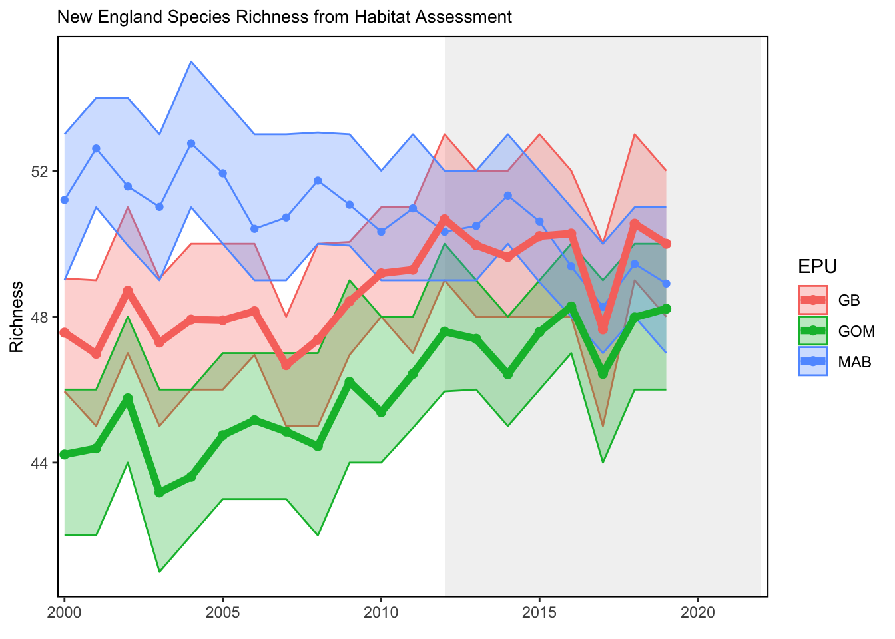
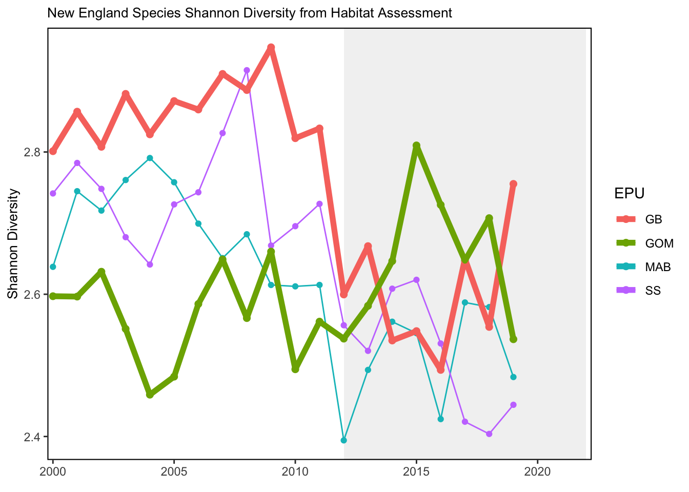
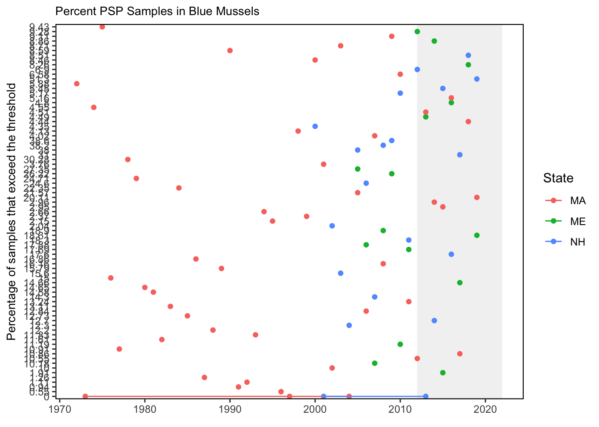

Trend lines are shown when slope is significantly different from 0 at
the p < 0.05 level. An orange line signifies an overall positive
trend, and purple signifies a negative trend. Note that in the final
report we will only test for trend when N >= 30. However, I have
relaxed that requirement for the purposes of this document so that
trends are highlighted when N >= 20. This means that some
trends shown here will not be present in the final document.
Dashed lines represent mean values of time series unless the indicator
is an anomaly, in which case the dashed line is equal to 0. Shaded
regions indicate the past ten years. If there are no new data for 2018,
the shaded region will still cover this time period.
Gulf of Maine & Georges Bank
Ocean temperature
GOM Slopewater Proportions
Chlorophyll and Primary Productivity
Seasonal Chlorophyll a & Primary Production
Phytoplankton Size class

Zooplankton
Small and Large Calanoid abundance anomalies
Calanus Stage
NO NEW DATA

Zooplankton Abundance Anomaly

Habitat Diversity


HABs
PSP


![Left panel: Bottom aragonite saturation state (ΩArag; summer only: June-August) on the U.S. Northeast Shelf plotted from available quality-controlled vessel- and glider-based datasets from 2007-present. Right top panel: Map depicting locations where summer bottom ΩArag in the habitat depth range reached or were lower than the laboratory-derived sensitivity level for Atlantic cod (Gadus morhua). The sensitivity value used for Atlantic cod was ΩArag ≤ 1.31, based on decreased larval survival observed at this level in Stiasny et al. (2016). Right bottom panel: Map depicting locations where summer bottom ΩArag in the habitat depth range reached or were lower than the laboratory-derived sensitivity level for American lobster (Homarus americanus). The sensitivity value used for American lobster was ΩArag ≤ 1.09, based on decreased stage V and VI juvenile survival observed at this level in Noisette et al. (2021). Gray circles in right top and bottom panels indicate locations where carbonate chemistry samples were collected, but bottom ΩArag values were higher than sensitivity values determined for that species.](images/Saba_Fig_SOE_NEFMC.jpg)